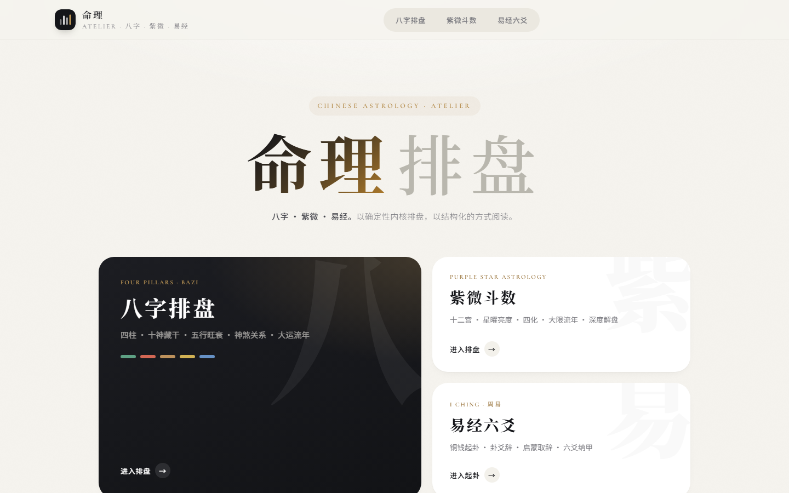
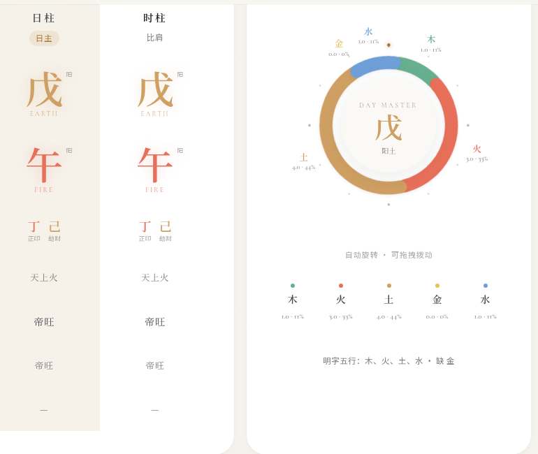
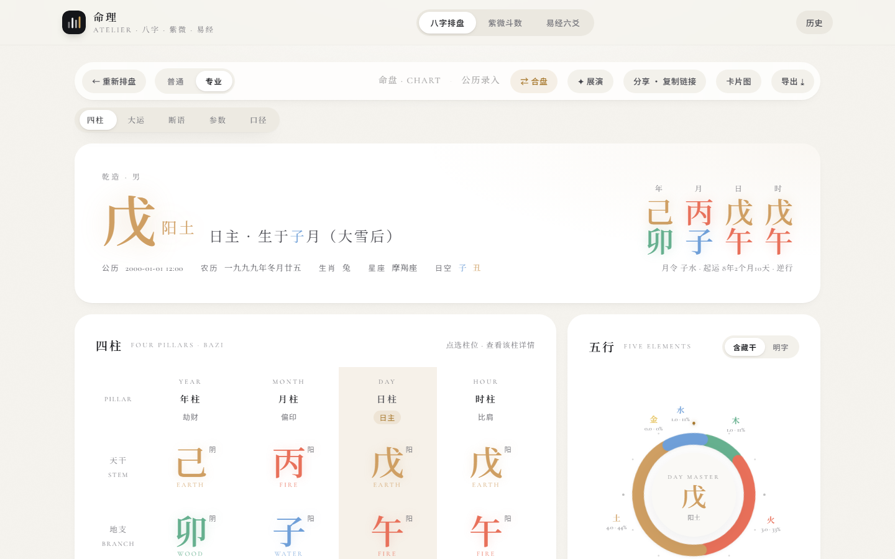

CHINESE ASTROLOGY · ATELIER
命理排盘
八字 · 紫微 · 易经，收进一个应用。确定性排盘内核，口径逐项可核对；网页打开即用，也有 Windows 桌面版。

Three Modules · One Shell
三个模块，一个外壳
顶部页签切换，不跳页、不丢状态。也可以用 ?mod=bazi、?mod=ziwei、?mod=yijing 直达。
八
FOUR PILLARS · BAZI
八字排盘
立春换年、节令换月、真太阳时，全国 2890 个区县可搜索。
- 四柱、藏干、十神、纳音、星运、空亡
- 五行环与神煞、合冲刑害联动高亮
- 大运 → 流年 → 流月 → 流日 → 流时 五级下钻
- 古籍断语与竖排线装命书
- 双人合盘 7 维评分、大运同步
- 历史收藏、深链分享、HTML / Markdown / PDF 导出
进入排盘 →
紫
PURPLE STAR ASTROLOGY
紫微斗数
十二宫、星曜亮度、四化、大限流年，附天纪知识条目；可自填 Key 接入大模型解读。
进入排盘 →
易
I CHING · 周易
易经六爻
铜钱起卦或手动定爻，本卦之卦与取辞，纳甲六亲、世应六神、用神与冲合对照，六十四卦图。
进入起卦 →
Five Elements · Linked
点一个颜色，整盘跟着亮
木火土金水各有一色。在应用里点五行环、神煞或十神，相关的柱位会同时高亮，其余退后。下面是一个简化示意，点点看。
五行联动
年柱
甲
子
月柱
丙
寅
日柱
戊
辰
时柱
庚
申
示意盘，仅演示交互，不是排盘结果。

Accuracy First
准确为先，审美其后
历
计算口径回执
换年、换月、日柱、真太阳时、有效时刻、节气区间逐项列出，可复现。
时
真太阳时
经度校正加 NOAA 均时差；出生地按区县搜索，内建经度。
运
五级时间轴
大运到流时逐列下钻，流年流月带联动断语与近似喜忌。
书
竖排线装命书
封面题签、卷首五行图、鱼尾版心、朱墨套印，可打印或存 PDF。
合
双人合盘
日主、生肖、夫妻宫、五行、用神、纳音、十神 7 维评分。
卦
有出处的六爻
卦爻辞取自维基文库《周易》固定修订；取辞与纳甲各注典籍出处。
Interface
纸色画布，白色大卡
墨色作主操作，鎏金只点在当前态与日主上；靠留白和柔和投影分层，不靠细线。

八字结果页：四柱、日主与口径
计算口径
| 年柱 | 立春换年 |
| 月柱 | 十二节令换月 |
| 日柱 | 连续干支纪日 |
| 时柱 | 依日干五鼠遁 |
| 子时换日 | 23:00 / 00:00 可切换 |
| 六爻取辞 | 《易学启蒙通释》 |
| 纳甲 | 《增删卜易》 |
本地运行
Node.js 20.19+；桌面版为 Electron 壳，内嵌同一份页面。
git clone https://github.com/Qiuizi/fate.git
cd fate
npm install
npm run dev # http://127.0.0.1:5173
npm run desktop # Windows 桌面窗口
npm run desktop:build # 打包便携版 / 安装版